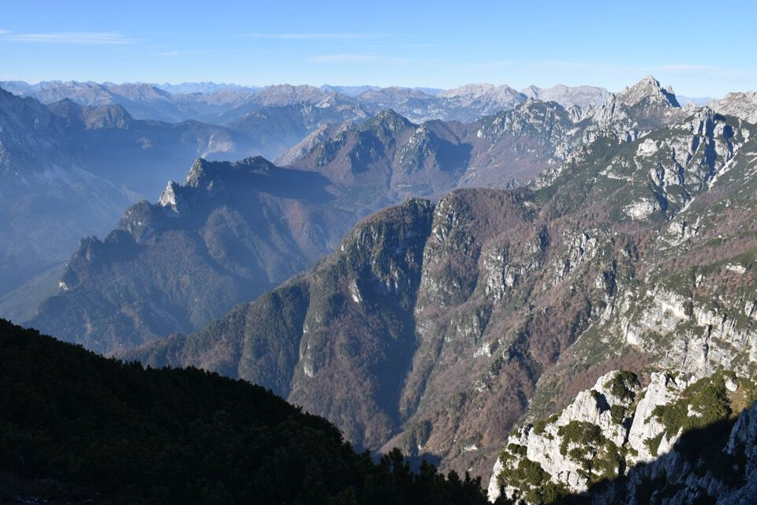
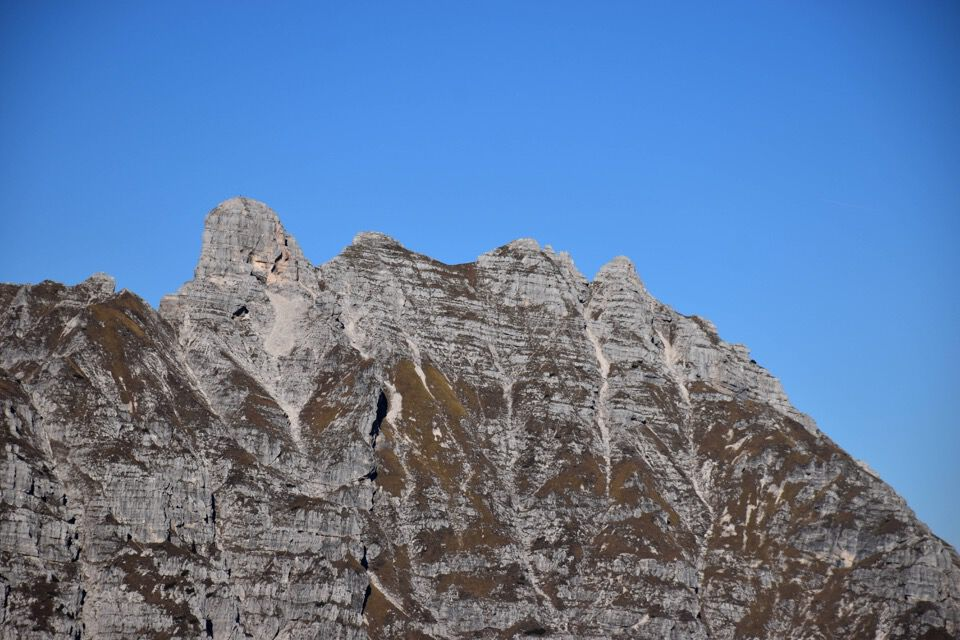

Pisimoni monte magnifico e superbo: sicuramente una delle montagne più intriganti di tutto il Friuli.
Torno dopo due anni a ripercorrere il magnifico cengione sud, relazionato da Armellini in Trois Neris, e approfitto per percorrere, assieme a Kelen, anche la bella cengia sopra il rio Breizi che da tempo desideravo esplorare.
Complice anche la bella giornata autunnale, ne è uscito un giro strepitoso.
Andiamo in cerca del troi per lo stavolo di quota 849: un sentierone!
Più che stavolo è una villa...
In ombra l'impluvio del rio Breizi, dove pure passa un sentiero; noi invece percorreremo, o almeno questi sono i piani, la cengia sotto la parete gialla di quell'evidente torre.
Inizia l'avventura.
Incautamente abbiamo perduto i tagli, come sarà successo a qualcun altro anni fa, dato che abbiamo trovato piegature in luoghi insospettabili.
Incredibili cenge con tracce di camoscio portano verso ovest (vedi qui per una esplorazione successiva a riguardo).
Ma eccoci finalmente sulla retta via.
Che il sentiero esistesse ancora non c'era alcun dubbio, dato che il percorso è obbligato.
Strepitoso!

Alla fine della cengia vera e propria era meglio tirare su dritti verso Forcje Diame: noi abbiamo continuato seguendo la traccia più evidente, che pure concorda con quanto riportato in carta Tabacco, ma ha dei punti su loppe davvero esposte: sconsigliabile, come si suol dire.
Ma eccoci dopo un po' a Forcje Diame: magnifica visione verso la valle del rio Simòn e il Cozarèl.
Ma alla forca ci aspetta la più disgustosa e orrenda delle sorprese: ma meglio sorvolare in questa sede.
Cengione sud: eccezionale, strepitoso.
Si può chiedere di più?
Questa volta dò un'occhiata al canalone - nel ciol mi verrebbe da dire - che è uno dei rami del rio Mulìn.
Dopo cinque buone ore dalla partenza, al primo segno CAI perdiamo totalmente il sentiero non riuscendo più a trovare il segno successivo! Robe da matti! Lo abbiamo capito in discesa dov'era, ma intanto ci ha toccato ravanare proprio quando pensavamo tutto fosse finito...
Il solito rinoceronte del Pisimoni.
E chi si ricordava questo bel praticello in cima?
Verso i monti di Sclûse.
Çuc dal Bôr.
Conturate!
Laggiù il Cuel da la Bareta.
Le nuvole stanno avanzando...
...meglio iniziare a scendere.
Non mi lascio scappare l'occasione di andare a visitare il grande antro del Pisimoni, ben visibile da Moggio.
Splendide cenge con tracce di camoscio permettono di collegarsi facilmente al Cuel di Sôre, se solo avessimo qualche ora di luce in più...
Un sogno!
Testimonianze di utilizzo.
Stavolo Uerc.
Da Ovedasso il Pisimoni sembra una fortezza lontanissima e inaccessibile: sembra impossibile che solo due ora fa fossimo non solo sopra le pareti ma che pure ci siamo passati in mezzo!